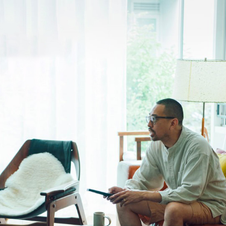
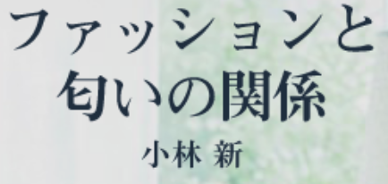
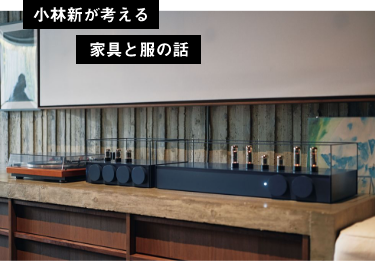
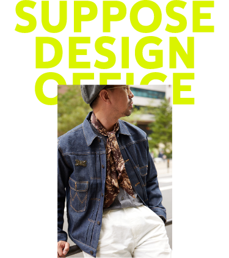
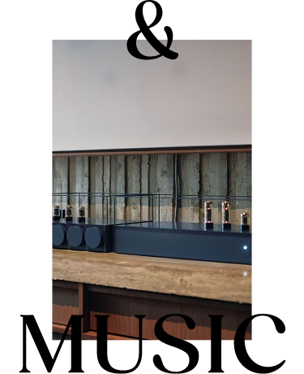
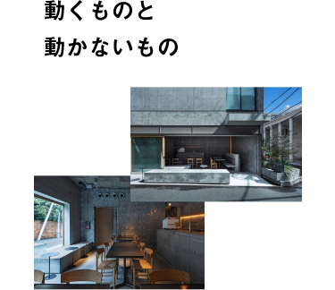
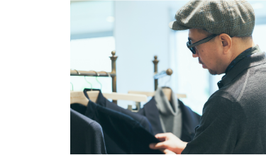
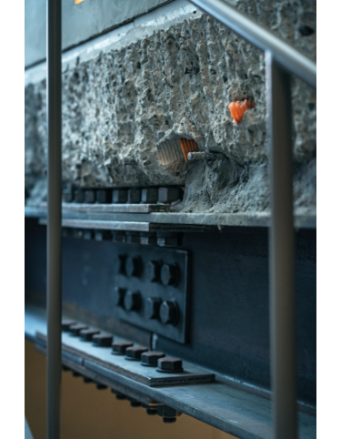
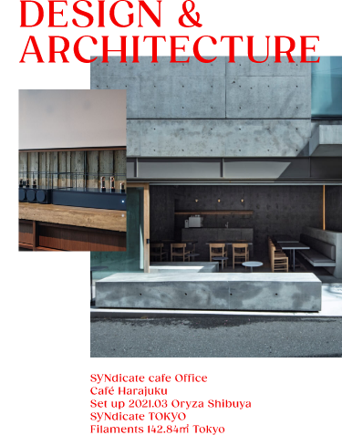

悔しかったんですよ。
いい建物を設計しても、わざわざ広島まで見に来る人は少ない。だったらどうしても見に来たくなる、 本当にいい建物をつくろうと思いました。仕事の本質は、“どこで活動するか”より“いいものをつくる”ことにある。ずっとそう思っているんです」こう話すのは谷尻誠さん。肩書きは建築家で起業家。今、「ジャンルを超えて注目される人物」といえば、間違いなくその名前が挙がるはずだ。


2022.02.26

ゆっくりと音楽に耳を傾けたい。ウトウトしてしまうような心地いい音楽、気分をアゲてくれる音楽。YouTubeやSpotifyで検索するのもいいけど、やっぱりラジオ。ふと耳に入ってくる音楽はある意味サプライズプレゼントみたいなものに近い。知らなかったアーティスト、聴こうとしなかったジャンルの音楽に出会わせてくれる。毎週日曜日夕食前の６時は、いい音楽に出会う時間。インターFM897「BARAKAN BEAT」でラジオパーソナリティを務めるピーター・バラカンさんにラジオの楽しさ、そして音楽との付き合い方について教えてもらいました。
キャリアは広島から始まった

住宅からホテルまで建築家としての活躍に加え、 “絶景”物件を扱う不動産会社や工務店、家具制作会社に映像制作会社、 情報検索サービスからキャンプ用品ブランドまで、 次々と事業を立ち上げては話題を集めている。 たとえば、東京都渋谷区にある〈社食堂〉もそのひとつ。 ここは、ダイニングカフェであると同時に、 谷尻さんが建築家の吉田愛さんと共同主宰する 建築設計事務所〈SUPPOSE DESIGN OFFICE〉のオフィスでもある いちばんの特徴は、一般客がランチを食べるスペースと、 設計事務所のデスクスペースとが、 オープンキッチンを挟んで仕切りなくつながっていること。 所長である谷尻さんの専用デスクはなく、 カフェの座席や壁づけのソファベンチなど、 その日パソコンを広げた場所が仕事場になる。

キャリアは広島から始まった
悔しかったんですよ。 いい建物を設計しても、わざわざ広島まで見に来る人は少ない。だったらどうしても見に来たくなる、 本当にいい建物をつくろうと思いました。仕事の本質は、“どこで活動するか”より“いいものをつくる”ことにある。ずっとそう思っているんです」こう話すのは谷尻誠さん。肩書きは建築家で起業家。今、「ジャンルを超えて注目される人物」といえば、間違いなくその名前が挙がるはずだ。

悔しかったんですよ。 いい建物を設計しても、わざわざ広島まで見に来る人は少ない。だったらどうしても見に来たくなる、 本当にいい建物をつくろうと思いました。仕事の本質は、“どこで活動するか”より“いいものをつくる”ことにある。ずっとそう思っているんです」こう話すのは谷尻誠さん。肩書きは建築家で起業家。今、「ジャンルを超えて注目される人物」といえば、間違いなくその名前が挙がるはずだ。




こばやし あらた●1974年広島県生まれ。
2000年、広島で建築設計事務所
〈SUPPOSE DESIGN OFFICE〉設立。08年東京オフィスを設立し、２拠点生活を始める。14年より建築家・吉田愛と共同主宰。代表作に広島・尾道の〈ONOMICHI U2〉、東京の〈hotel koe tokyo〉や自邸〈HOUSE T〉など。来年春、生まれ育った広島県三好市に“お醤油屋さんのみたらし団子店”をオープン予定。 Web：SUPPOSE DESIGN OFFICE
2000年、広島で建築設計事務所
〈SUPPOSE DESIGN OFFICE〉設立。08年東京オフィスを設立し、２拠点生活を始める。14年より建築家・吉田愛と共同主宰。代表作に広島・尾道の〈ONOMICHI U2〉、東京の〈hotel koe tokyo〉や自邸〈HOUSE T〉など。来年春、生まれ育った広島県三好市に“お醤油屋さんのみたらし団子店”をオープン予定。 Web：SUPPOSE DESIGN OFFICE
Interview CATAL DESIGN